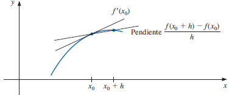
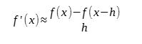
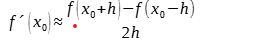

Diferenciación Numérica
La diferenciación numérica es un método matemático que se utiliza para encontrar la derivada de una función en un punto dado, es decir, para encontrar el valor de la pendiente de la curva en ese punto. En este artículo, exploraremos la definición de la diferenciación numérica, su significado y su aplicación en diferentes campos de las ciencias.
Metodos
Método hacia adelante
La diferenciación numérica hacia adelante es un método para aproximar la derivada de una función utilizando valores discretos. Es uno de los métodos más simples dentro de la diferenciación numérica. Una aproximación a primera derivada usa los primeros dos términos del polinomio de Taylor alrededor de xi en para un punto a la derecha xi+1 a una distancia h = xi+1–xi

Método hacia atrás
la diferenciación hacia atrás es un método de diferenciación numérica que se utiliza para aproximar la derivada de una función a un punto especifico. A diferencia de la diferenciación hacia adelante, que utiliza valores futuros de la función, la diferenciación hacia atrás utiliza valores pasados de la función para calcular la derivada La fórmula de diferenciación hacia atrás se define como:

Método centrado
La diferenciación central es un enfoque que se utiliza para aproximar la derivada de una función en un punto especifico al calcular la tasa de cambio promedio entre puntos cercanos a ambos lados del punto en cuestión. Este método proporciona una estimación más precisa que la diferenciación hacia adelante o hacia atrás. La fórmula para la diferenciación central es

Importancia de la diferenciación numérica en la ingeniería
La diferenciación numérica es una herramienta fundamental en la ingeniería moderna, especialmente en áreas donde el cálculo exacto de derivadas no es posible debido a la complejidad de las funciones o a la falta de una expresión analítica.
Ejemplos paso a paso
Paso a paso de una función f(x) 2x^2
Hallar las derivadas con la aproximación AD, AT y CN
Análisis
son secesiones matemáticas utilizadas para encontrar soluciones numéricas de forma iterativa, podemos observar que en la diferenciación central maneja índices de estimaciones más precisas que las diferenciaciones AD y AT